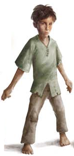

Places
People
Groups
Information not
revealed until later

The 8-year-old son of Kartenix the
guard captain of Brindol, Thurann was kidnapped by Sinruth. Thurann
is a brave, observant boy. Outwardly, he handled his
ordeal better than many of the adults. He even stole
food for Jalissa and himself.
Thurann has some skills you wouldn't expect the
son of a watch captain to have. Despite his small size,
he is very athletic with a skill at thievery. And while he
can't really fight, he's brave when it comes to climbing
or handling other hazards.